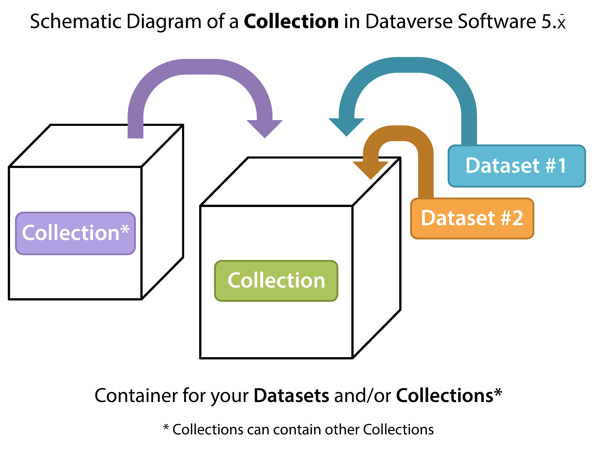

Glossary of Terms¶
Dataset¶
A dataset in Dataverse is a container for your data, documentation, code, and other products of research and the metadata describing this Dataset. For more information on creating datasets, see the section Dataset + File Management.

Dataverse¶
A dataverse is a container for datasets (research data, code, documentation, and metadata) and other dataverses, which can be setup for individual researchers, departments, journals and organizations. LibraData users cannot create dataverses on their own, but must submit a request. If your department, lab, or center would like a dataverse added, please email libra@virginia.edu.

Dates in LibraData¶
Data Creation Date: Date when the data collection or other materials were produced (NOT distributed, published or deposited).
Deposit Date: Current Date: The Date that the Dataset was deposited into THIS repository. Set automatically on dataset creation.
Date of Collection: Contains the date(s) when the data were collected.
Date of Description: In cases where a Dataset contains more than one description (for example, one might be supplied by the data producer and another prepared by the data repository where the data are deposited), the date attribute is used to distinguish between the two descriptions. The date attribute follows the ISO convention of YYYY-MM-DD. Usually not needed at Uva - YYYY-MM-DD
Distribution Date: Date that the work was made available for distribution/presentation.
Time Period Covered: Time period to which the data refer. This item reflects the time period covered by the data, not the dates of coding or making documents machine-readable or the dates the data were collected. Also known as span.
Metadata in Dataverse¶
Citation Metadata: any metadata that would be needed for generating a data citation and other general metadata that could be applied to any dataset. Also known as Citation Information or Cataloging Information.
Domain specific Metadata: When creating a dataset, you can choose domain specific metadata (if the administrator has activated the domain specific metadata) to describe special datasets, currently Dataverse supports metadata for Social Science, Life Science, Geospatial, and Astronomy datasets. Please contact libra@virginia.edu, if you need domain specific metadata. We will create a new dataverse for you.
File-level Metadata: When uploading files, you can give each file a description and a tag. You can also change the filename that displys.